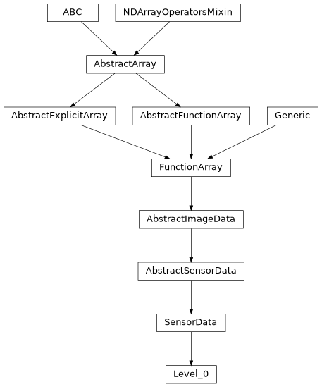
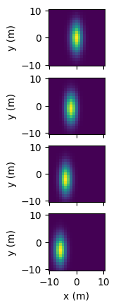

Level_0#
- class esis.data.Level_0(inputs, outputs, camera, timeline=None, *, axis_x='detector_x', axis_y='detector_y', axis_time='time', axis_channel='channel')[source]#
Bases:
SensorDataRepresentation of ESIS Level-0 images, the raw data gathered by the instrument.
The Data Acquisition and Control System (DACS) reads out the cameras and saves the resulting images as FITS files. This represents those FITS files as a Python class.
Attributes
A new copy of these images without the bias and overscan columns.
A
tupleofstrrepresenting the names of each dimension ofndarray.Return keys corresponding to all input axes representing bin centers
Return keys corresponding to all input axes representing bin vertices
The name of the logical axis corresponding to the different channels.
The name of the logical axis corresponding to changing time.
The name of the horizontal axis.
The name of the vertical axis.
if this array has multiple components, broadcast them against each other.
A model of the sensor used to capture these images.
The name of each ESIS channel in a human-readable format.
The master dark image for each channel.
Subtract the master
darkfrom each image in the sequence.The dark images used to construct the master dark image.
The dark images collected on the downleg of the trajectory.
The dark images collected on the upleg of the trajectory.
Remove cosmic rays using
astroscrappy.detect_cosmics().A new copy of these images in units of electrons.
Converts this array to an instance of
named_arrays.AbstractExplicitArrayA vector which contains the FITS header for each image.
L2-norm of this array.
The sequence of solar images taken during the flight.
Number of dimensions of the array.
The number of pixels along the horizontal axis.
The number of pixels along the vertical axis.
The underlying array storing the image data.
Shape of the array.
Total number of elements in the array.
Split the data into separate images for each tap.
The \(T=0\) time of the mission.
The sequence of NSROC events associated with these images.
The
AbstractArraytype corresponding to this arrayThe
AbstractExplicitArraytype corresponding to this arrayA new copy of these images where the bias has been removed.
Returns a new array with its units removed, if they exist
Methods
__init__(inputs, outputs, camera[, ...])add_axes(axes)Add new singleton axes to this array
all([axis, where])animate([ax, cmap, norm, vmin, vmax, ...])Create an animation using the frames in this dataset.
any([axis, where])astype(dtype[, order, casting, subok, copy])Copy of the array cast to a specific data type.
broadcast_to(shape[, append])cell_centers([axis, random])Convert an array from cell vertices to cell centers.
combine_axes([axes, axis_new])Combine some of the axes of the array into a single new axis.
copy()from_fits(path, camera[, axis_x, axis_y, ...])Load an image or an array of images from a FITS file or an array of files.
from_scalar_array(a[, like])Constructs a new version of this array using
aas the underlying data.from_taps(taps)Create a new copy of this object by concatenating the data from taps.
index(value[, axis])index_secant(value[, axis])interp_linear(item)max([axis, initial, where])mean([axis, where])median([axis])min([axis, initial, where])ndindex([axis_ignored])pcolormesh(axs, input_component_x, ...[, ...])Plot a
FunctionArrayviamatplotlib.pyplot.pcolormesh().percentile(q[, axis, out, overwrite_input, ...])ptp([axis])regrid(inputs[, axis, method, weights])Resample this function array onto a new set of input coordinates using
named_arrays.regridding.regrid().replace(**changes)A method version of
dataclasses.replace()for named arrays.reshape(shape)rms([axis, where])std([axis, where])sum([axis, where])to(unit[, equivalencies, copy])Convert this array to a new unit.
to_jshtml([ax, cmap, norm, vmin, vmax, ...])Create a Javascript animation ready to be displayed in a Jupyter notebook.
to_string([prefix, multiline])Convert this array instance to a string representation.
to_string_array([format_value, format_unit, ...])Convert to an array of strings where each string has an appropriately-formatted unit attached to the value.
transpose([axes])var([axis, where])vmr([axis, where])volume_cell(axis)Computes the n-dimensional volume of each cell formed by interpreting this array as a logically-rectangular grid of vertices.
weights(inputs[, axis, method])Compute the resampling weights of this array using
named_arrays.regridding.weights().Inheritance Diagram
- Parameters:
inputs (ImageHeader)
outputs (ScalarArray)
camera (AbstractCamera)
timeline (None | Timeline)
axis_x (str)
axis_y (str)
axis_time (str)
axis_channel (str)
- add_axes(axes)#
Add new singleton axes to this array
- all(axis=None, where=<no value>)#
- animate(ax=None, cmap=None, norm=None, vmin=None, vmax=None, cbar_fraction=0.1)[source]#
Create an animation using the frames in this dataset.
- Parameters:
ax (None | Axes | AbstractArray) – The
Axesinstance(s) to use. IfNone, a new set of axes will be created.cmap (None | str | Colormap) – The colormap used to map scalar data to colors.
norm (None | str | Normalize) – The normalization method used to scale data into the range [0, 1] before mapping to colors.
vmin (None | int | float | complex | ndarray | Quantity | AbstractArray) – The minimum value of the data range. If norm is
None, this parameter will be ignored.vmax (None | int | float | complex | ndarray | Quantity | AbstractArray) – The maximum value of the data range. If norm is
None, this parameter will be ignored.cbar_fraction (float) – The fraction of the space to use for the colorbar axes.
- Return type:
- any(axis=None, where=<no value>)#
- astype(dtype, order='K', casting='unsafe', subok=True, copy=True)#
Copy of the array cast to a specific data type.
Equivalent to
numpy.ndarray.astype().
- broadcast_to(shape, append=False)#
- cell_centers(axis=None, random=False)#
Convert an array from cell vertices to cell centers.
- Parameters:
- Return type:
- combine_axes(axes=None, axis_new=None)#
Combine some of the axes of the array into a single new axis.
- classmethod from_fits(path, camera, axis_x='detector_x', axis_y='detector_y', timeline=None)[source]#
Load an image or an array of images from a FITS file or an array of files.
- Parameters:
path (str | Path | AbstractScalarArray) – Either a single path or an array of paths pointing to the FITS files to load.
camera (AbstractCamera) – A model of the camera used to capture these images.
axis_x (str) – The name of the logical axis representing the horizontal dimension of the images.
axis_y (str) – The name of the logical axis representing the vertical dimension of the images.
timeline (None | Timeline)
- Return type:
- classmethod from_scalar_array(a, like=None)#
Constructs a new version of this array using
aas the underlying data.- Parameters:
a (float | Quantity | AbstractScalarArray) – Anything that can be coerced into an instance of
named_arrays.AbstractScalarArray.like (None | Self) – Optional reference object. If provided, the result will be defined by this object.
- Return type:
- from_taps(taps)#
Create a new copy of this object by concatenating the data from taps.
This method does not concatenate the
taps.inputs.pixelcoordinates. Instead, this method creates a new set of coordinates from the final shape.
- index(value, axis=None)#
- index_secant(value, axis=None)#
- interp_linear(item)#
- Parameters:
item (dict[str, AbstractArray])
- Return type:
- max(axis=None, initial=<no value>, where=<no value>)#
- mean(axis=None, where=<no value>)#
- min(axis=None, initial=<no value>, where=<no value>)#
- ndindex(axis_ignored=None)#
- pcolormesh(axs, input_component_x, input_component_y, input_component_row=None, input_component_column=None, index=None, output_component_color=None, **kwargs)#
Plot a
FunctionArrayviamatplotlib.pyplot.pcolormesh().FunctionArray.pcolormesh()takes in an axes object, or array of axes objects, along with components to be plotted along the x and y plot axes (input_component_xandinput_component_y). Additional components can be tiled along subplot row/column and are specified ininput_component_rowandinput_component_column.import named_arrays as na import numpy as np import astropy.units as u import matplotlib.pyplot as plt position = na.Cartesian2dVectorLinearSpace( start=-10, stop=10, axis=na.Cartesian2dVectorArray( x='position_x', y='position_y', ), num=21, ) * u.m x_width = 5 * u.m y_width = 2 * u.m velocity = 1 * u.m/u.s time = na.ScalarLinearSpace( start=0 * u.s, stop=3 * u.s, num=4, axis='time' ) intensity = np.exp(-(((position.x + velocity*time)/x_width) ** 2 + ((position.y + 2*velocity*time)/y_width)** 2)) scene = na.FunctionArray( inputs=position, outputs=intensity, ) fig, axs = plt.subplots( nrows=scene.outputs.shape['time'], squeeze=False, sharex=True, subplot_kw=dict(aspect='equal'), ) scene.pcolormesh( axs=axs, input_component_x='x', input_component_y='y', input_component_row='time', )

- percentile(q, axis=None, out=None, overwrite_input=False, method='linear', keepdims=False)#
- regrid(inputs, axis=None, method='multilinear', weights=None)#
Resample this function array onto a new set of input coordinates using
named_arrays.regridding.regrid().- Parameters:
inputs (AbstractArray) – The new input coordinates on which to resample the outputs.
axis (None | str | tuple[str]) – The logical axes of the input over which to resample.
method (Literal['multilinear', 'conservative']) – The resampling method to use.
weights (None | tuple[AbstractScalar, dict[str, int], dict[str, int]]) – Optional weights which can be computed in advance using
weights()to greatly speed repeated resampling of the same inputs.
- Return type:
See also
weights()If you need to resample the same coordinates more than once.
- replace(**changes)#
A method version of
dataclasses.replace()for named arrays.- Parameters:
changes – The fields of the dataclass to be overwritten
- Return type:
- rms(axis=None, where=<no value>)#
- std(axis=None, where=<no value>)#
- sum(axis=None, where=<no value>)#
- to(unit, equivalencies=[], copy=True)#
Convert this array to a new unit.
Equivalent to
astropy.units.Quantity.to().
- to_jshtml(ax=None, cmap=None, norm=None, vmin=None, vmax=None, cbar_fraction=0.1)[source]#
Create a Javascript animation ready to be displayed in a Jupyter notebook.
Converts the output of
animate()to Javascript usingmatplotlib.animation.Animation.to_jshtml(), and then wraps the html string inIPython.display.HTML.- Parameters:
ax (None | Axes | AbstractArray) – The
Axesinstance(s) to use. IfNone, a new set of axes will be created.cmap (None | str | Colormap) – The colormap used to map scalar data to colors.
norm (None | str | Normalize) – The normalization method used to scale data into the range [0, 1] before mapping to colors.
vmin (None | int | float | complex | ndarray | Quantity | AbstractArray) – The minimum value of the data range. If norm is
None, this parameter will be ignored.vmax (None | int | float | complex | ndarray | Quantity | AbstractArray) – The maximum value of the data range. If norm is
None, this parameter will be ignored.cbar_fraction (float) – The fraction of the space to use for the colorbar axes.
- Return type:
- to_string(prefix=None, multiline=None)#
Convert this array instance to a string representation.
- to_string_array(format_value='%.2f', format_unit='latex_inline', pad_unit='$\\,$')#
Convert to an array of strings where each string has an appropriately-formatted unit attached to the value.
- var(axis=None, where=<no value>)#
- volume_cell(axis)#
Computes the n-dimensional volume of each cell formed by interpreting this array as a logically-rectangular grid of vertices.
Note that this method is usually only used for sorted arrays.
If self is a scalar, this method computes the length of each edge, and is equivalent to
numpy.diff(). If self is a 2d vector, this method computes the area of each quadrilateral, and if self is a 3d vector, this method computes the volume of each cuboid.
- weights(inputs, axis=None, method='multilinear')#
Compute the resampling weights of this array using
named_arrays.regridding.weights(). The output of this method is designed to be used byregrid().- Parameters:
inputs (AbstractArray) – The new input coordinates on which to resample the outputs.
axis (None | str | tuple[str]) – The logical axes of the input over which to resample.
method (Literal['multilinear', 'conservative']) – The resampling method to use.
- Return type:
See also
regrid()A method designed to use these weights.
- property axes: tuple[str, ...]#
A
tupleofstrrepresenting the names of each dimension ofndarray.Must have the same length as the number of dimensions of
ndarray.
- property axes_center: tuple(str)#
Return keys corresponding to all input axes representing bin centers
- property axes_flattened: str#
Combine
axesinto a singlestr.This is useful for functions like
numpy.flatten()which returns an array with only one dimension.
- property axes_vertex: tuple(str)#
Return keys corresponding to all input axes representing bin vertices
- axis_channel: str = 'channel'#
The name of the logical axis corresponding to the different channels.
- property broadcasted: FunctionArray#
if this array has multiple components, broadcast them against each other.
Equivalent to
a.broadcast_to(a.shape)
- camera: AbstractCamera = <dataclasses._MISSING_TYPE object>#
A model of the sensor used to capture these images.
- property channel: ScalarArray[ndarray[Any, dtype[str]]]#
The name of each ESIS channel in a human-readable format.
- property dark: Self#
The master dark image for each channel.
Calculated by taking the mean of
darks.despikedalongaxis_time.
- property darks: Self#
The dark images used to construct the master dark image.
This is a concatenation of
darks_upanddarks_down.
- property darks_down: Self#
The dark images collected on the downleg of the trajectory.
This considers all the images after the parachute deployment since there is a transient, anomalous signal that occurs during atmospheric re-entry.
- property darks_up: Self#
The dark images collected on the upleg of the trajectory.
This considers all the images up until the moment the shutter door is opened.
Any images without an exposure time close to the median exposure time are ignored. This is intended to remove the first 1 or 2 images from the beginning of each exposure sequence since these images often have a different exposure time than the rest of the sequence.
- property despiked: Self#
Remove cosmic rays using
astroscrappy.detect_cosmics().
- property explicit: FunctionArray#
Converts this array to an instance of
named_arrays.AbstractExplicitArray
- property indices: dict[str, ScalarArrayRange]#
- inputs: ImageHeader = <dataclasses._MISSING_TYPE object>#
A vector which contains the FITS header for each image.
- property length: FunctionArray#
L2-norm of this array.
- property lights: Self#
The sequence of solar images taken during the flight.
This uses only the images where the ring-laser gyroscope was enabled, so this should represent the images with the best-possible pointing stability.
- property ndim: int#
Number of dimensions of the array. Equivalent to
numpy.ndarray.ndim.
- outputs: na.ScalarArray = <dataclasses._MISSING_TYPE object>#
The underlying array storing the image data.
- property shape: dict[str, int]#
Shape of the array. Analogous to
numpy.ndarray.shapebut represented as adictwhere the keys are the axis names and the values are the axis sizes.
- property size: int#
Total number of elements in the array. Equivalent to
numpy.ndarray.size
- property type_abstract: Type[AbstractFunctionArray]#
The
AbstractArraytype corresponding to this array
- property type_explicit: Type[FunctionArray]#
The
AbstractExplicitArraytype corresponding to this array
- property value: FunctionArray#
Returns a new array with its units removed, if they exist